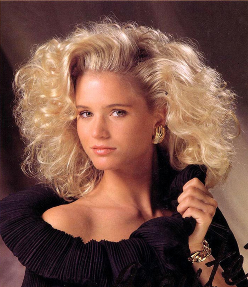
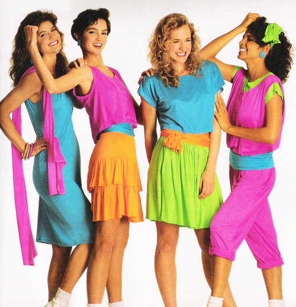
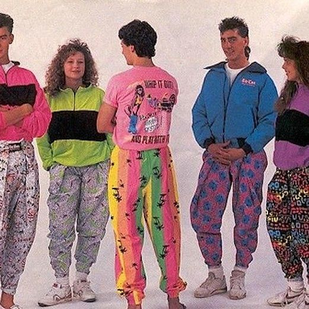
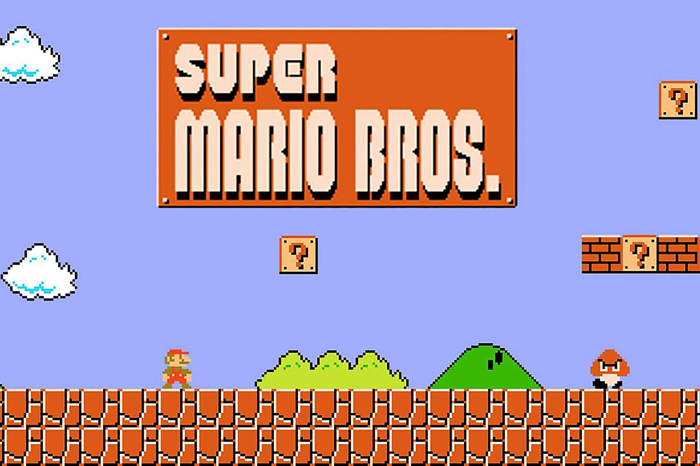
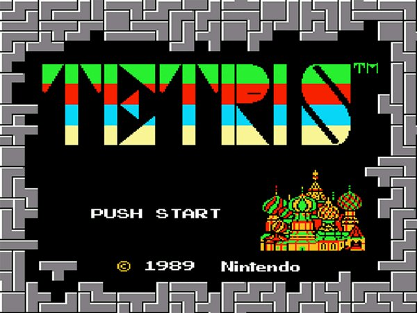
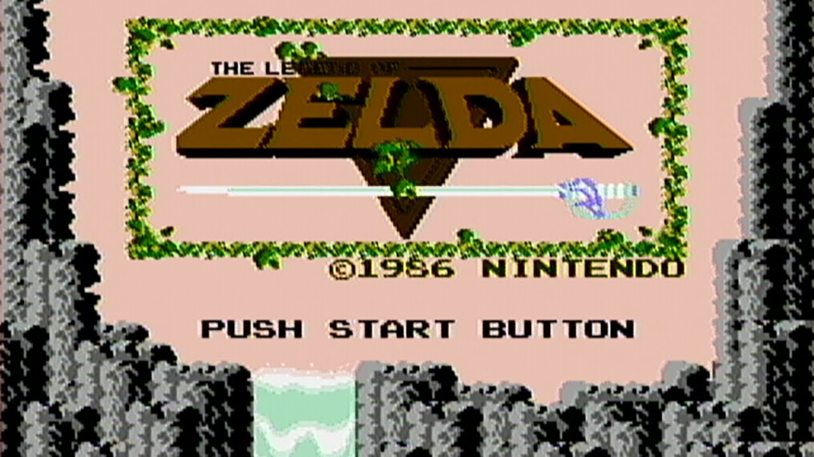

Big Hair

Neon Colors

Parachute Pants

Super Mario Brothers

Tetris

Legend of Zelda

1980 -- "The Wall" by Pink Floyd
1981 -- "Hi Infidelity" by REO Speedwagon
1982 -- "Asia" by Asia
1983 -- "Thriller" by Michael Jackson
1984 -- "Thriller" by Michael Jackson AGAIN
1985 -- "Born In The USA" by Bruce Springsteen
1986 -- "Whitney Houston" by Whitney Houston
1987 -- "Slippery When Wet" by Bon Jovi
1988 -- "Faith" by George Michael
1989 -- "Dont Be Cruel" by Bobby Brown
The images in this project are not mine. They are being used for a school project.